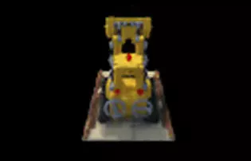

Hello! I'm Neha Marne, a Master's graduate in Robotics from the University of Maryland (UMD), College Park, with a Bachelor's degree from VNIT Nagpur. I am seeking a full-time opportunity in Robotics, Computer Vision, Motion Planning, SLAM, or related fields. I have a strong mathematical foundation in classical robotics, pattern recognition, deep learning, and 3D vision. I have previously worked at two robotics startups, AEPL (Aerospace Engineers Pvt. Ltd.) and Mowito.
At AEPL, I was part of a five-member team tasked with developing a swarm of three UAVs for flocking and foraging purposes. We built the UAVs in-house and developed on an existing multi-robot repository for path planning of UAVs. The repository was written in Buzz, an under-research language lacking a standard debugger. To address the debugging challenges, I created a set of test cases that streamlined our development process. Our efforts culminated when we made a presentation for the Indian Army in just two months.
At Mowito, I worked on adapting robot motion based on the number of obstacles surrounding it. I clustered 2D LiDAR data to determine the number of obstacles around an AMR and adjusted the planning mode according to the cluttering of obstacles near the robot.
During my Master's program, I studied classical robotics, focusing on perception, path planning, and robotics controls. I also explored pattern recognition techniques, including regression, classifiers, and clustering, developing these codes from scratch. Additionally, I worked on deep learning techniques such as object detection and superpixel implementation, along with 3D vision techniques like NeRF and 3D point cloud segmentation.
Thank you for visiting my website. Let's connect and explore how we can collaborate!
UnderGrad Projects

NeRF implementation
3D point cloud segmentation using pointnet
Image reconstruction using INR(implicit Neural representation)
Demonstrated swarming coherence by showcasing capabilities such as flocking and foraging of 3 UAVs, utilizing GPS for outdoor
localization and XBEEs for communication on Jetson Nano microcontroller, to make a presentation for the Indian army.
Achieved end-to-end UAV Navigation using research-based language BUZZ to make a demonstration for the Indian army.
Enhanced UGV navigation stack by dynamically adjusting its motion based on obstacle density clustered from 2D LiDAR data
using PCL, reducing computational overhead by 17%.
Devised an onboard localization algorithm inspired by the GPS triangulation method for indoor UAV localization using UWB
signal strength, IMU, and sonar sensors.
Implemented a basic attraction-repulsion force field to execute the boid algorithm for UAV coordination.
Detected target and obstacle cubes using color thresholding and determined their poses using a monocular camera through
similarity measurements to update occupancy grid.
Achieved navigation of a 3 UGVs incorporating collision and obstacle avoidance to, secure a top-five position among 75 teams.
RESEARCH WORK
PUBLICATIONS
OLSAC: Open-source Library for Swarm Algorithms and Communication. Marne N., Sarode, M., Bhoyar, M., & Zade, H. In. International Conference on Advances in Mechanical Engineering(ICAME). edition. Lecture Notes in Mechanical Engineering(2020). Springer, 769–775. [Paper]
Hand gesture control of computer featuresRunwal, R., Dhonde, S., Pardhi, J., Varude, S. K. A. Marne N. In. International Conference on Advances in Mechanical Engineering(ICAME). edition. Lecture Notes in Mechanical Engineering(2020). Springer, 799–805. [Paper]
This project involves implementing a Neural Radiance Field (NeRF) through a differentiable volumetric renderer.
The implementation includes generating world space rays from camera pixels, sampling points along these rays, and performing volumetric rendering using the emission-absorption model.
A key component of this work is the development of a differentiable volume renderer, which allows for optimizing scene parameters through image supervision.
Additionally, the project includes creating an implicit volume representation via a Multi-Layer Perceptron (MLP), optimizing the parameters of a basic implicit volume, and visualizing the results.
This implementation facilitates advanced 3D learning tasks, such as inverse rendering, by leveraging the differentiability of the rendering process.
In this project, I implemented a PointNet-based architecture for point cloud classification and segmentation tasks.
The classification model distinguishes between three object categories: chairs, vases, and lamps, providing a probability distribution for predicted classes.
The segmentation model focuses on segmenting chair objects into six semantic classes.
The models were trained and evaluated using a provided dataset, achieving notable test accuracies.
Robustness analysis was conducted by rotating point clouds and varying the number of input points to evaluate model performance under different conditions.
The implementation includes visualizations of both correct and incorrect predictions to aid in interpreting the models' behavior and accuracy.
Developed an implicit neural representation (INR) system to parameterize image signals using a feed-forward neural network.
The project involved constructing a dataset, defining a neural network, and training it to reconstruct images from coordinate inputs.
Achieved successful image reconstruction and evaluated the model performance using PSNR metrics.
This work demonstrates proficiency in neural networks, data processing, and image analysis, which are crucial for advanced perception systems in robotics.
In this project, I explored superpixel generation methods and their applications in image segmentation.
Initially, I implemented superpixels by clustering pixels using the K-means algorithm, resulting in a basic superpixel map.
I then improved upon this by implementing the SLIC (Simple Linear Iterative Clustering) algorithm, which generates more coherent and visually appealing superpixel maps.
This project focuses on optimizing a robot's motion based on the density of obstacles in its vicinity.
Conducted during my internship at Mowito, I employed Euclidean clustering to analyze 2D LiDAR data and dynamically update motion primitives based on the number of obstacles around the robot.
This approach streamlined the robot's movements and significantly reduced computational overhead, enhancing overall efficiency.
This Project was done for the company Mowito and thus code is not available.
The objective of this project was to utilize three Unmanned Ground Vehicles (UGVs) to tap color-coded objects while avoiding obstacles and preventing collisions in an unknown environment.
We updated the occupancy grid with targets and obstacles detected using the monocular cameras on each of the three bots.
In a team of three, my primary contribution was implementing the A* planner for the swarm.
This project involved developing a decentralized algorithm to maintain swarm coherence during flocking.
Using the PX4-MAVROS framework, we implemented basic attraction-repulsion forces to achieve this goal.
The coherence of the swarm was assessed using the Boid algorithm, ensuring effective and synchronized flocking behavior.
- Co-designed the robot using SolidWorks, focusing on structural and functional aspects.
- Developed the Jacobian matrix and derived the Inverse Kinematics equations to enable various snake-like motions, including side-winding, rolling, and linear propagation.
- Implemented and tested these movements within the ROS and Gazebo simulation environment, ensuring accurate and realistic motion dynamics.
Executed pick-and-place operations using a robotic manipulator, 3 UGVs and an overhead monocular
camera incorporating cases like faulty or missing parts and priority orders for the ARIAC challenge using ROS2.
In this project, I performed camera pose estimation using homography.
The task involved computing the rotation and translation between the camera and a coordinate frame originating at a corner of a sheet of paper.
Pipeline
Edge Detection
Isolated the page from the background using HSV trackbars.
Applied GaussianBlur to sharpen boundaries and Canny edge detection to identify edges.
Creating Hough Space
A total of 180/ThetaResolution angles were considered from -90 to 90 where resolution can vary as per the accuracy we want.
Similarly Rho i.e. the distance of the line from the origin was considered from -diagonal to diagonal.
For each pixel in the image frame calculated the corresponding rho and theta values, making the hough space
Extracting the Lines:
Identified points in the Hough space exceeding the threshold and converted them into lines as below.
Detected the four corner points across all frames.
Computed and decomposed the homography matrix to determine translation in x, y, and z coordinates.
In this project, I implemented a stereo vision system to extract 3D information from two images taken from different angles.
By comparing the relative positions of objects in the images, I developed a comprehensive pipeline to achieve accurate depth estimation.
Pipeline
Calibration
Selected matching features between image pairs using inbuilt feature matching functions.
Estimated the Fundamental matrix using RANSAC and inbuilt SVD functions
Computed the Essential matrix from the Fundamental matrix and decomposed it into translation T and rotation R.
Rectification
Applied perspective transformations to ensure epipolar lines are horizontal in both images.
Calculated and printed homography matrices H1 and H2 for rectification.
Plotted epipolar lines and feature points on both images.
Correspondence:
Used matching window techniques such as SSD and Cross Correlation for each epipolar line.
Calculated and rescaled disparity to 0-255, saving the results as grayscale and color images using heat map conversion.
Depth Image Computation:
Converted disparity information into depth data for each pixel.
Saved the depth images in both grayscale and color formats using heat map conversion.
In this project, I implemented a comprehensive camera calibration without relying on built-in functions.
I calibrated the camera by deriving the intrinsic matrix K using a minimum set of matching points.
This involved constructing a mathematical pipeline, calculating the projection matrix P, and decomposing it into translation, rotation, and intrinsic matrices using the Gram–Schmidt process, followed by computing the reprojection error.
Further, I utilized a pinhole camera model with a checkerboard calibration target to estimate camera parameters.
Using OpenCV functions, detected checkerboard corners in 13 images, computed the reprojection error for each image, and determined the intrinsic matrix K.
Additionally, I explored methods to enhance the accuracy of the intrinsic matrix K.
This project highlights key techniques in camera calibration and pose estimation, crucial for accurate computer vision applications.